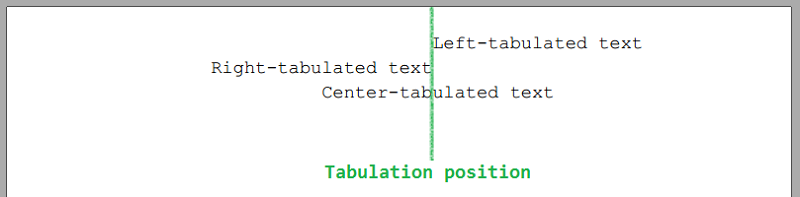
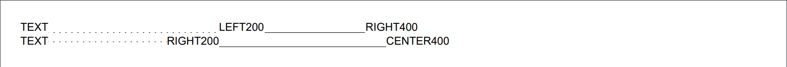
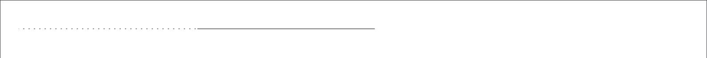
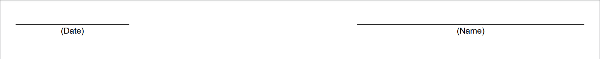
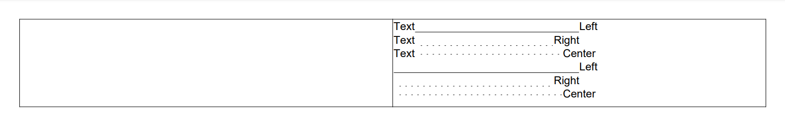

The article describes how to add and configure tabulations in a paragraph.
Tabulations allow you to align the paragraph content. You can add tabulations of three types:
Left - the paragraph content will be aligned to the left of the tabulation position.
Right - the paragraph content will be aligned to the right of the tabulation position.
Center - the paragraph content will be center-aligned on the tabulation position.
A paragraph can have more than one tabulation.

The space before the tabulated content can be filled with leading symbols: bottom dots, center dots, or bottom line
(see the TabulationLeading enumeration).
You can add tabulations to an entire paragraph or add a tabulation symbol before particular elements of a paragraph.
To add a tabulation to a paragraph, you can use the following options:
To specify the tabulation position as the X coordinate, use the AddTabulation method.
To specify the tabulation position in percentage of the paragraph width, use the AddTabulationInPercent method.
Both methods allow you to specify the tabulation type and leading symbols if necessary.
To add a tabulation symbol before a paragraph element, you can use the following options:
Call the method AddTabSymbol.
Set the addTabulationSymbol parameter to True
when calling AddParagraph,
AddParagraphToSection,
or one of the AddText and AddTextToParagraph methods of ParagraphExtensions.
Create Lines Using Tabulations
You can create lines, underlines and signature lines using tabulations with the BottomLine leading.
For example, you can create a line with length = 100% of the paragraph width, the tabulation position of 100% and the tabulation type Right:
s.AddParagraph().AddTabSymbol().AddTabulationInPercent(100, TabulationType.Right, TabulationLeading.BottomLine);
See also
Examples
Example 1. Add one tabulation per line Hide
DocumentBuilder
.New()
.AddSection()
.AddParagraph().AddTabSymbol().AddTextToParagraph("LEFT300").AddTabulation(300, TabulationType.Left)
.ToSection()
.AddParagraph().AddTabSymbol().AddTextToParagraph("RIGHT300").AddTabulation(300, TabulationType.Right)
.ToSection()
.AddParagraph().AddTabSymbol().AddTextToParagraph("CENTER300").AddTabulation(300, TabulationType.Center)
.ToDocument()
.Build("Result.pdf");
The above code will generate the following:
See the documentExample 2. Add two tabulations with leading symbols per line Hide
DocumentBuilder
.New()
.AddSection()
.AddParagraph("TEXT", addTabulationSymbol: true)
.AddTextToParagraph("LEFT200", addTabulationSymbol: true)
.AddTextToParagraph("RIGHT400")
.AddTabulation(200, TabulationType.Left, TabulationLeading.DotBottom)
.AddTabulation(400, TabulationType.Right, TabulationLeading.BottomLine)
.ToSection()
.AddParagraph()
.AddTextToParagraph("TEXT", addTabulationSymbol: true)
.AddTextToParagraph("RIGHT200", addTabulationSymbol: true)
.AddTextToParagraph("CENTER400")
.AddTabulation(200, TabulationType.Right, TabulationLeading.DotCenter)
.AddTabulation(400, TabulationType.Center, TabulationLeading.BottomLine)
.ToDocument().Build("Result.pdf");
The above code will generate the following:

See the documentExample 3. Add tabulations with the position in percent Hide
DocumentBuilder
.New()
.AddSection()
.AddParagraph().AddTabSymbol().AddTextToParagraph("LEFT75%").AddTabulationInPercent(75, TabulationType.Left)
.ToSection()
.AddParagraph().AddTabSymbol().AddTextToParagraph("RIGHT75%").AddTabulationInPercent(75, TabulationType.Right)
.ToSection()
.AddParagraph().AddTabSymbol().AddTextToParagraph("CENTER75%").AddTabulationInPercent(75, TabulationType.Center)
.ToDocument().Build("Result.pdf");
The above code will generate the following:
See the documentExample 4. Create lines by means of tabulations Hide
DocumentBuilder
.New()
.AddSection()
.AddParagraph()
.AddTabSymbol()
.AddTabSymbol()
.AddTabulation(200, TabulationType.Left, TabulationLeading.DotBottom)
.AddTabulation(400, TabulationType.Left, TabulationLeading.BottomLine)
.ToDocument().Build("Result.pdf");
The above code will generate the following:

See the documentExample 5. Create signature lines using tabulations Hide
DocumentBuilder
.New()
.AddSection()
.AddParagraph()
// Create a line from X=0 to X=20%:
.AddTabSymbol().AddTabulationInPercent(20, TabulationType.Right, TabulationLeading.BottomLine)
// Create a line from X=60% to X=100%:
.AddTabSymbol().AddTabSymbol().AddTabulationInPercent(60).AddTabulationInPercent(100, TabulationType.Right, TabulationLeading.BottomLine)
.ToSection()
.AddParagraph()
// Add text under the first line in the center (position 10%):
.AddTabSymbol().AddTextToParagraph("(Date)").AddTabulationInPercent(10, TabulationType.Center)
// Add text under the second line in the center (position 80%):
.AddTabSymbol().AddTextToParagraph("(Name)").AddTabulationInPercent(80, TabulationType.Center)
.ToDocument().Build("Result.pdf");
The above code will generate the following:

See the documentExample 6. Use tabulations in a table Hide
DocumentBuilder
.New()
.AddSection()
.AddTable()
.AddColumnToTable().AddColumnToTable()
.AddRow()
.AddCellToRow()
.AddCell()
.AddParagraph().AddTextToParagraph("Text", addTabulationSymbol: true)
.AddTabulationInPercent(50, TabulationType.Left, TabulationLeading.BottomLine)
.AddText("Left")
.ToCell()
.AddParagraph().AddTextToParagraph("Text", addTabulationSymbol: true)
.AddTabulationInPercent(50, TabulationType.Right, TabulationLeading.DotBottom)
.AddText("Right")
.ToCell()
.AddParagraph().AddTextToParagraph("Text", addTabulationSymbol: true)
.AddTabulationInPercent(50, TabulationType.Center, TabulationLeading.DotCenter)
.AddText("Center")
.ToCell()
.AddParagraph().AddTabSymbol()
.AddTabulationInPercent(50, TabulationType.Left, TabulationLeading.BottomLine)
.AddText("Left")
.ToCell()
.AddParagraph().AddTabSymbol()
.AddTabulationInPercent(50, TabulationType.Right, TabulationLeading.DotBottom)
.AddText("Right")
.ToCell()
.AddParagraph().AddTabSymbol()
.AddTabulationInPercent(50, TabulationType.Center, TabulationLeading.DotCenter)
.AddText("Center")
.ToDocument().Build("Result.pdf");
The above code will generate the following:

See the document